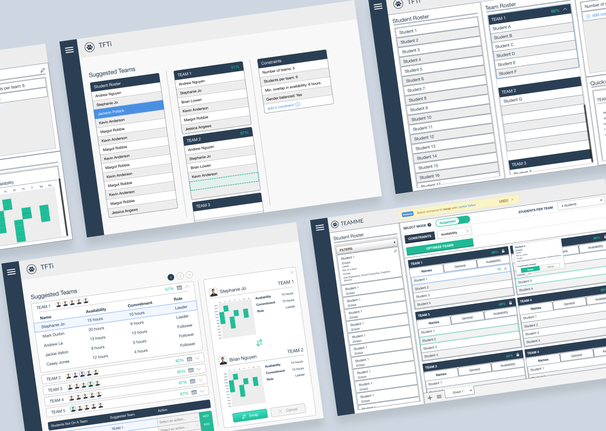

I was in charge of designing a team formation UI tool for instructors called Teammatic. It features a system for efficiently creating teams given a series of customizable constraints.
What was a challenge? Accepting that perfect teams are impossible. However, we learned that instructors are generally happy with auto-generated teams, as long as they had freedom and flexibility to make changes.
What are the next steps? It would be ideal to incorporate the entire team formation process into Teammatic, from gathering student data, to forming teams, to post-course feedback.
Teammatic handles student availability, leadership attribute, gender, role distribution, and student preferences for possible teammates. Once the data is received, instructors will have the ability to choose constraints of how they want to create teams. After a suggested group of teams have been formed, the instructor will have the ability to modify these teams to their liking.

Iterations: transitioning from 3-columns to 2-columns
Student Swap Process (v1.0)
We really wanted to give instructors the ability to swap students between teams, both manually and with suggestions (highlighted in green) from the interface. Doing so promotes the idea of a mixed-initiative interface: instructors can work within the given UI, but also have the flexibility to make changes where desired.
We really wanted to give instructors the ability to swap students between teams, both manually and with suggestions (highlighted in green) from the interface. Doing so promotes the idea of a mixed-initiative interface: instructors can work within the given UI, but also have the flexibility to make changes where desired.